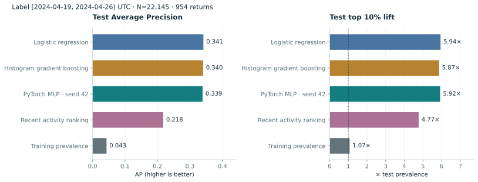
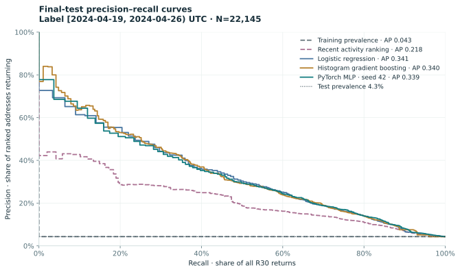
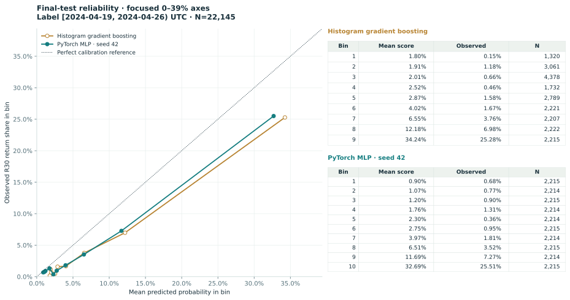
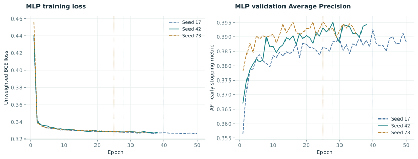
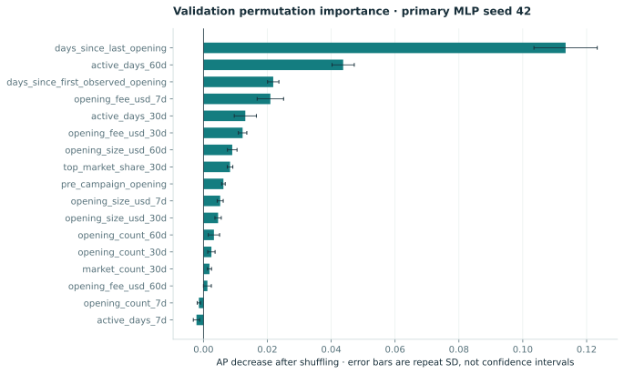

What the held-out data shows
- The final test contains 22,145 addresses and 954 R30 returns (4.3%).
- Primary MLP test AP is 0.3387; Histogram gradient boosting, the strongest baseline by validation AP, has test AP 0.3403.
- The MLP top 10% ranking captures 59.2% of returns, with precision 25.5% and lift 5.921× over test prevalence.
- Model selection used validation AP and selected PyTorch MLP · seed 42. MLP seed 42 was designated before final test evaluation; all three seeds are reported.
Training conditions and final-test conditions differ. These predictive associations do not establish the effect of rebates.
Does the neural network improve prediction?
Same final-test addresses and labels for every method. Ordering uses test AP for display; model selection uses validation AP.



Precision and recall
AP uses the full prediction set. Exported curves may contain bounded display points; this does not change AP.



How reliable are the probabilities?
Counts accompany every occupied plotted bin. The strongest probability baseline by validation AP is compared with the primary MLP; all probability-model bins are available below.



Training and early stopping
Solid curves show the primary seed. Dotted vertical lines mark each restored best epoch; final-test metrics never drive early stopping.



What does the MLP depend on?
Ten validation-set shuffles per feature. Repeat SD describes shuffle variation, not sampling uncertainty or a causal effect.



Exact model scores
| Model | Validation AP | Test positive / N | Top 10% ranked N | AP | ROC-AUC | Top 10% precision | Top 10% recall | Top 10% lift | Brier | Log loss |
|---|---|---|---|---|---|---|---|---|---|---|
| Training prevalence | 0.09607 | 954/22,145 | 2,215 | 0.04308 | 0.5 | 0.04605 | 0.1069 | 1.069 | 0.05052 | 0.2286 |
| Recent activity ranking | 0.272 | 954/22,145 | 2,215 | 0.2177 | 0.8156 | 0.2054 | 0.4769 | 4.768 | N/A | N/A |
| Logistic regression | 0.3874 | 954/22,145 | 2,215 | 0.3412 | 0.8503 | 0.256 | 0.5943 | 5.942 | 0.03435 | 0.136 |
| Histogram gradient boosting | 0.3877 | 954/22,145 | 2,215 | 0.3403 | 0.8543 | 0.2528 | 0.587 | 5.869 | 0.03508 | 0.1395 |
| PyTorch MLP · seed 42 | 0.3951 | 954/22,145 | 2,215 | 0.3387 | 0.8538 | 0.2551 | 0.5922 | 5.921 | 0.03476 | 0.137 |
Addresses seen during parameter training
| Model | Training membership | R30 returns / N | AP | ROC-AUC | Top 10% lift |
|---|---|---|---|---|---|
| Training prevalence | seen in training | 551/11,363 | 0.04849 | 0.5 | 1.034 |
| Training prevalence | new to training | 403/10,782 | 0.03738 | 0.5 | 1.116 |
| Recent activity ranking | seen in training | 551/11,363 | 0.3203 | 0.8538 | 5.858 |
| Recent activity ranking | new to training | 403/10,782 | 0.1776 | 0.812 | 4.736 |
| Logistic regression | seen in training | 551/11,363 | 0.3909 | 0.8665 | 6.257 |
| Logistic regression | new to training | 403/10,782 | 0.2779 | 0.8573 | 5.604 |
| Histogram gradient boosting | seen in training | 551/11,363 | 0.3845 | 0.8551 | 6.112 |
| Histogram gradient boosting | new to training | 403/10,782 | 0.2769 | 0.8565 | 5.43 |
| PyTorch MLP · seed 42 | seen in training | 551/11,363 | 0.3881 | 0.8666 | 6.131 |
| PyTorch MLP · seed 42 | new to training | 403/10,782 | 0.2715 | 0.8592 | 5.505 |
All fixed MLP seeds
| MLP seed | Best epoch | Validation AP | Test AP | Test top 10% lift | Test Brier |
|---|---|---|---|---|---|
| 17 | 40 | 0.3925 | 0.3386 | 5.795 | 0.03494 |
| 42 | 28 | 0.3951 | 0.3387 | 5.921 | 0.03476 |
| 73 | 25 | 0.3953 | 0.3433 | 5.879 | 0.03523 |
Training-to-test distribution shift
Label prevalence is visible in the time-split table. The table below also shows how inactivity changes before each prediction cutoff.
| Use | Cutoff UTC | No opening in last 30 days / N | Share | Later returns in inactive group | Median days since latest opening |
|---|---|---|---|---|---|
| train | 2023-11-22T00:00:00Z | 0/2,197 | 0.0% | 0 | 2.569 |
| train | 2023-12-06T00:00:00Z | 0/4,457 | 0.0% | 0 | 4.88 |
| train | 2023-12-20T00:00:00Z | 605/6,255 | 9.7% | 40 | 11.84 |
| train | 2024-01-03T00:00:00Z | 1,926/8,095 | 23.8% | 50 | 17.52 |
| train | 2024-01-17T00:00:00Z | 3,674/11,363 | 32.3% | 147 | 14.89 |
| validation | 2024-02-21T00:00:00Z | 9,230/16,634 | 55.5% | 432 | 36.42 |
| test | 2024-03-27T00:00:00Z | 13,561/22,145 | 61.2% | 148 | 47.43 |
Time split and leakage controls
| Use | Prediction cutoff T (UTC) | Label start (inclusive) | Label end (exclusive) | Samples | R30 returns |
|---|---|---|---|---|---|
| train | 2023-11-22T00:00:00Z | 2023-12-15T00:00:00Z | 2023-12-22T00:00:00Z | 2,197 | 560 |
| train | 2023-12-06T00:00:00Z | 2023-12-29T00:00:00Z | 2024-01-05T00:00:00Z | 4,457 | 907 |
| train | 2023-12-20T00:00:00Z | 2024-01-12T00:00:00Z | 2024-01-19T00:00:00Z | 6,255 | 997 |
| train | 2024-01-03T00:00:00Z | 2024-01-26T00:00:00Z | 2024-02-02T00:00:00Z | 8,095 | 830 |
| train | 2024-01-17T00:00:00Z | 2024-02-09T00:00:00Z | 2024-02-16T00:00:00Z | 11,363 | 1,221 |
| validation | 2024-02-21T00:00:00Z | 2024-03-15T00:00:00Z | 2024-03-22T00:00:00Z | 16,634 | 1,598 |
| test | 2024-03-27T00:00:00Z | 2024-04-19T00:00:00Z | 2024-04-26T00:00:00Z | 22,145 | 954 |
11,363 unique addresses contribute training examples. Cutoff dates, addresses and hashes are tracking fields, not predictors. Scalers fit on training examples only; the validation set selects settings and best epochs and is not added back to training.
MLP architecture: 17 → 32 → 16 → 1, ReLU, dropout 0.1, unweighted BCEWithLogitsLoss and AdamW. Learning rate 0.001, weight decay 0.001, batch size 256, maximum 100 epochs and validation-AP patience 10.
Feature dictionary and transforms
| Exported feature | Definition | Transform |
|---|---|---|
| opening_count_7d | Opening/increase execution count, preceding 7 days; zero if no activity. | log1p + training-only standardisation |
| active_days_7d | Distinct active UTC days, preceding 7 days; zero if no activity. | log1p + training-only standardisation |
| opening_size_usd_7d | Sum of opening/increase size, USD, preceding 7 days; zero if no activity. | log1p + training-only standardisation |
| opening_fee_usd_7d | Net opening position fees after trader discount, USD, preceding 7 days; zero if no activity. | log1p + training-only standardisation |
| opening_count_30d | Opening/increase execution count, preceding 30 days; zero if no activity. | log1p + training-only standardisation |
| active_days_30d | Distinct active UTC days, preceding 30 days; zero if no activity. | log1p + training-only standardisation |
| opening_size_usd_30d | Sum of opening/increase size, USD, preceding 30 days; zero if no activity. | log1p + training-only standardisation |
| opening_fee_usd_30d | Net opening position fees after trader discount, USD, preceding 30 days; zero if no activity. | log1p + training-only standardisation |
| opening_count_60d | Opening/increase execution count, preceding 60 days; zero if no activity. | log1p + training-only standardisation |
| active_days_60d | Distinct active UTC days, preceding 60 days; zero if no activity. | log1p + training-only standardisation |
| opening_size_usd_60d | Sum of opening/increase size, USD, preceding 60 days; zero if no activity. | log1p + training-only standardisation |
| opening_fee_usd_60d | Net opening position fees after trader discount, USD, preceding 60 days; zero if no activity. | log1p + training-only standardisation |
| days_since_first_observed_opening | Days from first observed opening to cutoff; extract-bounded history. | log1p + training-only standardisation |
| days_since_last_opening | Days from latest observed opening to cutoff. | log1p + training-only standardisation |
| pre_campaign_opening | 1 if an opening was observed before the earning window, else 0. | Binary / unscaled |
| market_count_30d | Distinct markets with openings in the preceding 30 days. | log1p + training-only standardisation |
| top_market_share_30d | Largest market's share of opening USD size in the preceding 30 days; zero without openings. | Training-only standardisation |
Probability-bin evidence
Show all probability models and occupied bins
| Model | Mean prediction | Observed share | Bin N |
|---|---|---|---|
| Training prevalence | 0.1395 | 0.04308 | 22,145 |
| Logistic regression | 0.009212 | 0.006772 | 2,215 |
| Logistic regression | 0.01001 | 0.009033 | 2,214 |
| Logistic regression | 0.01058 | 0.009029 | 2,215 |
| Logistic regression | 0.01209 | 0.01626 | 2,214 |
| Logistic regression | 0.02175 | 0.004517 | 2,214 |
| Logistic regression | 0.0298 | 0.006321 | 2,215 |
| Logistic regression | 0.04027 | 0.02033 | 2,214 |
| Logistic regression | 0.05849 | 0.03476 | 2,215 |
| Logistic regression | 0.103 | 0.06775 | 2,214 |
| Logistic regression | 0.3162 | 0.256 | 2,215 |
| Histogram gradient boosting | 0.01803 | 0.001515 | 1,320 |
| Histogram gradient boosting | 0.01907 | 0.01176 | 3,061 |
| Histogram gradient boosting | 0.02007 | 0.006624 | 4,378 |
| Histogram gradient boosting | 0.02524 | 0.004619 | 1,732 |
| Histogram gradient boosting | 0.02871 | 0.01578 | 2,789 |
| Histogram gradient boosting | 0.04019 | 0.01666 | 2,221 |
| Histogram gradient boosting | 0.06548 | 0.03761 | 2,207 |
| Histogram gradient boosting | 0.1218 | 0.06976 | 2,222 |
| Histogram gradient boosting | 0.3424 | 0.2528 | 2,215 |
| PyTorch MLP · seed 42 | 0.009016 | 0.006772 | 2,215 |
| PyTorch MLP · seed 42 | 0.01068 | 0.007678 | 2,214 |
| PyTorch MLP · seed 42 | 0.01199 | 0.009029 | 2,215 |
| PyTorch MLP · seed 42 | 0.01762 | 0.0131 | 2,214 |
| PyTorch MLP · seed 42 | 0.02296 | 0.003613 | 2,214 |
| PyTorch MLP · seed 42 | 0.02753 | 0.009481 | 2,215 |
| PyTorch MLP · seed 42 | 0.03972 | 0.01807 | 2,214 |
| PyTorch MLP · seed 42 | 0.06508 | 0.03521 | 2,215 |
| PyTorch MLP · seed 42 | 0.1169 | 0.07272 | 2,214 |
| PyTorch MLP · seed 42 | 0.3269 | 0.2551 | 2,215 |
Source and reproducibility
Indexed execution source · coverage 2023-09-20T00:00:00Z → 2024-05-29T00:00:00Z
Frozen input SHA-256: 76e4992debf0bf2e60328221c94c840aa97c2c7545550085bcd3e83d09fe61a3
Recorded versions, code state, transforms and model settings
{
"input": {
"label": "GMX V2 indexed perpetual execution events",
"is_synthetic": false,
"source_url": "https://gmx.squids.live/gmx-synthetics-arbitrum:prod/api/graphql",
"sha256": "76e4992debf0bf2e60328221c94c840aa97c2c7545550085bcd3e83d09fe61a3",
"manifest_sha256": "a0ee998e84798554d53ec8e0f3253d87a11b224dc04dfac3eb45bf4ded9513c7",
"coverage_start": "2023-09-20T00:00:00Z",
"coverage_end": "2024-05-29T00:00:00Z",
"history_complete": false,
"boundary_status": "verified",
"row_count": 907107,
"notes": [
"Indexed data, not an independent replay of historical deployed contracts.",
"Order types 2–7 only; type 7 liquidations are excluded from opening/increase. ADL may appear as type 4; this surface has no secondaryOrderType, so voluntary-decrease classification is unverified.",
"USD sizeDeltaUsd is scaled by 10^30.",
"Net position fee USD=(positionFeeAmount-traderDiscountAmount)*collateralTokenPriceMin/10^30; missing fields stay unknown. Excludes external rebates, borrowing, funding, UI fees and gas.",
"Missing OrderCreated records remain unknown, never treated as post-campaign creations.",
"Raw response caches are immutable snapshots for this request; use a new directory to refresh.",
"First-observed opening age and pre-campaign activity use the extraction window, not complete protocol history.",
"Features use successful positive-size increases strictly before each cutoff; labels use [cutoff+23 days, cutoff+30 days)."
]
},
"executed_at": "2026-10-04T07:00:46.322975Z",
"input_sha256": "76e4992debf0bf2e60328221c94c840aa97c2c7545550085bcd3e83d09fe61a3",
"manifest_sha256": "a0ee998e84798554d53ec8e0f3253d87a11b224dc04dfac3eb45bf4ded9513c7",
"config_sha256": "497b7920111b8e0f735ac46f451563124274682b44a3b40bf33ef6b2f4fb8ad5",
"config": {
"schema_version": 1,
"name": "GMX STIP: opening-return prediction across the earning cutoff",
"chain_id": 42161,
"is_synthetic": false,
"boundary_status": "verified",
"campaign_start": "2023-11-15T00:00:01Z",
"campaign_end": "2024-03-27T00:00:00Z",
"train_as_of": [
"2023-11-22T00:00:00Z",
"2023-12-06T00:00:00Z",
"2023-12-20T00:00:00Z",
"2024-01-03T00:00:00Z",
"2024-01-17T00:00:00Z"
],
"validation_as_of": "2024-02-21T00:00:00Z",
"test_as_of": "2024-03-27T00:00:00Z",
"expected_counts": [
{
"as_of": "2023-11-22T00:00:00Z",
"n": 2197,
"positive": 560
},
{
"as_of": "2023-12-06T00:00:00Z",
"n": 4457,
"positive": 907
},
{
"as_of": "2023-12-20T00:00:00Z",
"n": 6255,
"positive": 997
},
{
"as_of": "2024-01-03T00:00:00Z",
"n": 8095,
"positive": 830
},
{
"as_of": "2024-01-17T00:00:00Z",
"n": 11363,
"positive": 1221
},
{
"as_of": "2024-02-21T00:00:00Z",
"n": 16634,
"positive": 1598
},
{
"as_of": "2024-03-27T00:00:00Z",
"n": 22145,
"positive": 954
}
]
},
"code_commit": "6a75f1f358ed16d3b81b3c2090aeabc735646c09",
"tracked_worktree_dirty": false,
"source_sha256": {
"ml.py": "770a589ea5097be75d92ec762484ac7c019d5f8dec1018e53d99ce1d0ba90c4e",
"ml_data.py": "cf93965266ef04f46cde9a613de065a9494f7bbeeabd2b02b90e1a016f231bfd",
"ml_models.py": "9aa9a6dacc9e475bf87d7d88106bbce1e78df9ffa1d9bee617be48c1a79654aa",
"ml_report.py": "6de6fed7cc782b3f04b262769b1da2c664dd43f131a9b3ff6f478d690fb764a6"
},
"python": "3.14.4",
"platform": "Windows-11-10.0.26200-SP0",
"versions": {
"incentivescope": "0.3.0",
"duckdb": "1.5.6",
"torch": "2.14.1+cpu",
"numpy": "2.5.3",
"scikit-learn": "1.9.1",
"matplotlib": "3.11.2"
},
"device": "cpu",
"reproduction_scope": "Same frozen input, code, CPU environment and seeds; cross-platform or CPU/GPU bitwise equivalence is not promised.",
"feature_order": [
"opening_count_7d",
"active_days_7d",
"opening_size_usd_7d",
"opening_fee_usd_7d",
"opening_count_30d",
"active_days_30d",
"opening_size_usd_30d",
"opening_fee_usd_30d",
"opening_count_60d",
"active_days_60d",
"opening_size_usd_60d",
"opening_fee_usd_60d",
"days_since_first_observed_opening",
"days_since_last_opening",
"pre_campaign_opening",
"market_count_30d",
"top_market_share_30d"
],
"preprocessing": {
"feature_names": [
"opening_count_7d",
"active_days_7d",
"opening_size_usd_7d",
"opening_fee_usd_7d",
"opening_count_30d",
"active_days_30d",
"opening_size_usd_30d",
"opening_fee_usd_30d",
"opening_count_60d",
"active_days_60d",
"opening_size_usd_60d",
"opening_fee_usd_60d",
"days_since_first_observed_opening",
"days_since_last_opening",
"pre_campaign_opening",
"market_count_30d",
"top_market_share_30d"
],
"log_features": [
"opening_count_7d",
"active_days_7d",
"opening_size_usd_7d",
"opening_fee_usd_7d",
"opening_count_30d",
"active_days_30d",
"opening_size_usd_30d",
"opening_fee_usd_30d",
"opening_count_60d",
"active_days_60d",
"opening_size_usd_60d",
"opening_fee_usd_60d",
"days_since_first_observed_opening",
"days_since_last_opening",
"market_count_30d"
],
"standardized_features": [
"opening_count_7d",
"active_days_7d",
"opening_size_usd_7d",
"opening_fee_usd_7d",
"opening_count_30d",
"active_days_30d",
"opening_size_usd_30d",
"opening_fee_usd_30d",
"opening_count_60d",
"active_days_60d",
"opening_size_usd_60d",
"opening_fee_usd_60d",
"days_since_first_observed_opening",
"days_since_last_opening",
"market_count_30d",
"top_market_share_30d"
],
"mean": [
0.4814281239849265,
0.37200732554668103,
3.371437561299028,
0.7935762668086923,
1.1979307516415503,
0.9801207368238108,
7.07307773557527,
1.7501192548488411,
1.6038855555660683,
1.330711305047056,
8.755651980635493,
2.2448158856741856,
3.3086981047425654,
2.357749140880188,
0.753975000455954,
0.7036456532482114
],
"scale": [
0.7557011091018994,
0.5234509465028863,
4.572580467122647,
1.5290363101982751,
1.0334410956147335,
0.7495056435811397,
4.371770686536677,
2.005080667341101,
1.0630132718249188,
0.7705375479068297,
3.215513254767298,
2.097738020833287,
1.02156663233441,
1.107372474826354,
0.49034407841746586,
0.3876558901839774
],
"variance": [
0.5710841662978409,
0.2740008933947675,
20.908492128311565,
2.337952037904756,
1.0680004981053806,
0.5617587097599783,
19.112378935661365,
4.020348482545035,
1.1299972160759186,
0.59372811273427,
10.339525491584183,
4.400504804049557,
1.0435983842990673,
1.2262737980030443,
0.24043731523907388,
0.15027708919433194
],
"fit_split": "train",
"fit_row_count": 32367,
"output_dtype": "float32"
},
"primary_seed": 42,
"model_configs": {
"constant": {
"train_prevalence": 0.13949392900176105
},
"recency": {
"score": "negative days_since_last_opening",
"ranking_only": true
},
"logistic_regression": {
"C": 10.0,
"penalty": "l2",
"max_iter": 1000,
"validation_candidates": [
{
"C": 0.1,
"average_precision": 0.3869753809162243
},
{
"C": 1.0,
"average_precision": 0.38735101570154873
},
{
"C": 10.0,
"average_precision": 0.38742525568512826
}
]
},
"hist_gradient_boosting": {
"max_leaf_nodes": 7,
"learning_rate": 0.05,
"max_iter": 100,
"early_stopping": false,
"random_state": 42,
"validation_candidates": [
{
"max_iter": 100,
"average_precision": 0.387712282963082
},
{
"max_iter": 200,
"average_precision": 0.3858040407458917
}
]
},
"pytorch_mlp": {
"architecture": [
17,
32,
16,
1
],
"activation": "ReLU",
"dropout": 0.1,
"optimizer": "AdamW",
"learning_rate": 0.001,
"weight_decay": 0.001,
"loss": "unweighted BCEWithLogitsLoss",
"batch_size": 256,
"max_epochs": 100,
"patience": 10
}
}
}Results JSONResearch noteCutoff feature dataFinal-test predictionsPrimary PyTorch checkpointArtifact hashesEditable notebook
Interpretation limits
- This is one historical campaign and one final time holdout; it is not evidence of generalisation across protocols or campaigns.
- Training and validation labels occur while rebates are active. The final test label occurs after rebates end; prevalence and behaviour can shift.
- Repeated addresses occur at different training cutoffs. The final test separately reports addresses present and absent from parameter training.
- Addresses are not people. Keeper senders are not trader accounts; several addresses may belong to one entity.
- The label is a positive-size successful opening or increase in [T + 23 days, T + 30 days), not any return within 30 days.
- Predictions and permutation importance describe associations. They do not estimate the causal effect of incentives or justify targeting interventions.
- Scores are not additionally calibrated. Reliability plots show any probability bias; recency provides ranking scores only.
- Indexed coverage starts on 2023-09-20. First observed opening and pre-campaign history are bounded by this extract, not lifetime history.
- This event-time backtest uses a later frozen indexer snapshot. Historical point-in-time index availability and subsequent corrections were not audited.
- Dune execution and independent cross-source agreement have not been established by this ML study.
Run notes
- No validation refit, class reweighting, oversampling or probability calibration.
- All three MLP seeds are reported; seed 42 was fixed as primary before test evaluation.
- Top 10% uses ceil(n * 0.1), with descending score and ascending account for ties.
- AP uses all scores; PR charts retain at most 500 points per curve.
- Permutation importance measures validation predictive association, not causal effects.
- Exact reproducibility applies to the same CPU software environment, not across devices/versions.